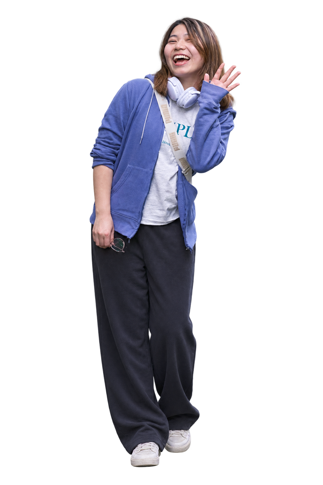

Core Question / 我长期追的问题
当 AI 浪潮涌来，人如何形成主体性、开始创造、建立关系，并找到自己的独特价值与社会位置？
主要对象
早期 AI Builder、研究者、青年创造者与尚未进入主流视野的项目。

AI CREATOR ECOSYSTEM · HUMAN STORY · AI WORKFLOW / 月亮反复做的三类工作

当 AI 浪潮涌来，人如何形成主体性、开始创造、建立关系，并找到自己的独特价值与社会位置？
主要对象
早期 AI Builder、研究者、青年创造者与尚未进入主流视野的项目。
发现｜进入网络，找到已经开始行动的人。
理解｜用田野、深访和共同实践看见动力、处境与早期信号。
支持｜用叙事、反馈、社区机制与生态连接，把相遇接到下一步。
我最早做的事很简单：和一个人待久一点，把他的故事听完。后来去了更多创造现场，我开始关心一个想法怎么被做出来，人与人相遇之后又会发生什么。

做深度媒体、接触大理的创新教育和数字游民社区时，我常常从生活史聊起：哪些转折真的改变了一个人，他为什么会做后来的选择。
在 6 个 AI 营地和黑客松里，我观察 80 多名青少年从日常问题走到第一个可体验的原型，也记录他们收到真实反馈以后改了什么。
超级个体实验室从一场小聚开始。100 多天里来了 400 多位创造者；截至 2025 年 9 月，累计连接和触达近 500 人。活动结束之后，关系怎么办？这个问题留了下来。
我进入早期团队、开发者社区和 AI for Good 现场，继续研究、采访和写作，也把反复遇到的问题做成工作台、档案和小工具。Vitality Studio 是我暂时给这组实践起的名字。
六个案例按工作责任排序：建立创造者入口、把 AI 变成多人工作流、研究人与现场、完成跨团队交付，再把内容沉淀成可继续访问的资产。
这里单独标注当前状态，避免把正在推进或仍在探索的合作包装成完成案例。我的日常工作落在早期团队研究、开发者生态叙事、AI for Good 议题与自有内容基础设施之间。
AMD 开发者日、2050 与 OPC 等开发者生态现场的研究、采访、叙事架构与公开内容。
Developer Ecosystem · Event Narrative进入团队现场，推进创始人、产品与开发者生态的研究和叙事。
Founder · Product · Developer Story探索海外开发者叙事，以及 AI for Good 与 AI and Society 议题。
尚未作为完成案例呈现Co-building 生命力、AI 田野志与生命力博物馆，继续承接人物、项目、现场与长期观察。
Community · Field Notes · Living Archive
进入非共识网络
找到已经行动的人
田野 · 深访
共同实践
召集 · 展示
回访 · 连接
故事 · 档案
图谱 · Workflow
这些问题来自已经做过的实践，也是我下一步真正需要在更完整的组织与业务现场里继续验证的部分。
过去证明了我能进入网络、建立信任；下一步需要把项目阶段、行动连续性与外部反馈一起纳入判断。
超级个体实验室验证了入口与氛围，但还没有完成组织级 CRM 与商业指标闭环。
观察编辑器已完成小型真实场景测试；迁移到团队仍要补齐责任、权限、版本与审核机制。
这里保留原始作品与工具入口。核心案例负责说明我做了什么；这些链接让读者继续查看文章、展馆、产品和研究基础设施。